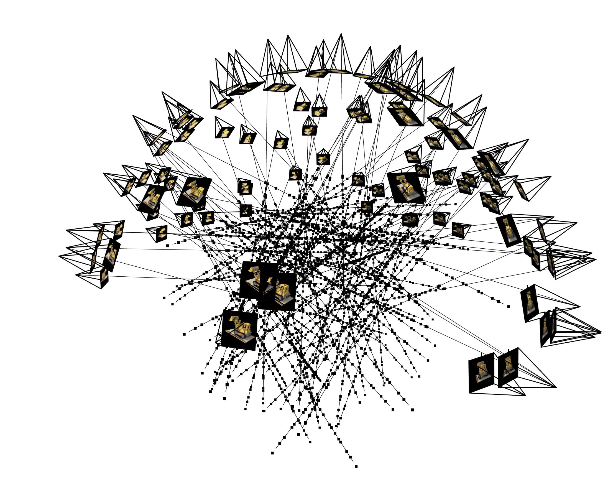
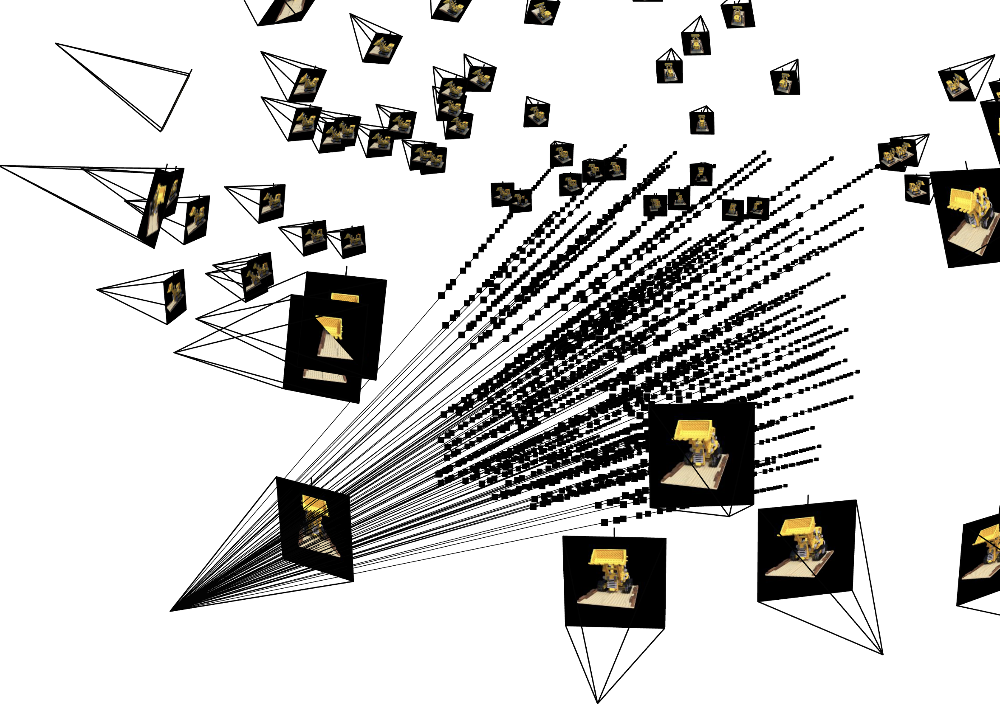

In this project we implement Neural Radiance Fields, a technique for parameterizing a radiance field with a neural network.
Part 1: The 2d Case
We first look at the 2d case. We train a simple Multilayer Perceptron (MLP) to learn the RGB pixel values from a 2d coordinate (i, j) in the unit square [0, 1]^2, structured as shown below:
We use a sinusoidal positional encoding (PE) at the start of the network to project the input 2 dimensional coordinate (x, y) into 2*(2*L + 1) dimensional space, with the coordinates of the higher dimensional representation given by [x, y, sin(2^0 pi x), cos(2^0 pi x), sin(2^0 pi y), sin(22^1 pi x), sin(2^1 pi x), cos(2^1 pi x), sin(2^1 pi y), sin(2^1 pi x), ...]. This enables the network to see high frequency (high precision) information about the coordinates. Without this positional encoding, the network does not learn fine grained spatial structure accurately, as we shall see below.
Once the MLP has been trained on an image, we can use it to reconstruct the image by making predictions on a mesh over the unit square. Thus we are training the MLP to parameterize a function from the unit square to the unit cube. It is interesting to note that this is precisely the task that we used bilinear image interpolation for in previous projects such as face warping and image stitching, only now with a more flexible parameterization.
This is the target image that we use for this section.

This is a reconstruction by a neural network:

Now we look at some examples of the image that the network learns. Each of the below plots shows the networks predictions at different stages of the training process.
We additionally show the training loss curves, as well as the peak signal to noise ratio (PSNR), computed as 10*log(1/mse). Where mse is the mean squared error training loss.
We fix 256 hidden channels, 2 layers, training for 1000 steps with batch size of 10,000. We vary the positional encoding dimension, indexed by L.
With L=10:


With L=3:


With L=0:
This demonstrates that the positional encoding is indeed helping the network to work with higher spatial frequencies.
Now we fix L=10, and vary the number of hidden channels.
With 256 hidden channels:
With 64 hidden channels:


With 16 hidden channels:


With 8 hidden channels:


With 4 hidden channels:


With 2 hidden channels:


Here we can see that as the number of hidden channels goes to one, the representational power of the network is greatly reduced.
Below we see the training process on another image


Part 2: The full 3d Situation
Now we use a neural radiance field to represent a 3 dimensional scene. We start with many images of the same scene taken from different angles. We need to know the specific location and camera direction for each image. With this information we can create a map from pixels in the training data to rays in the real 3d space.To create such a map, we first use the inverse of the intrinsic matrix to map from pixel space to camera coordinates, and then we use the extrinsic matrix (which contains the information about the location and orientation of the camera) to map from camera coordinates to world coordinates.
Now we can compute a ray associated with a pixel by looking at the subspace spanned by the camera location and the pixel location in world coordinates.
We additionally set up a random sampler that produces a random selection of rays from our dataset.

